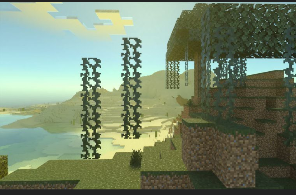

Boofarzia is a creative realm made by Bananabirdboy, he and multiple other players have been building on this world for
many years now, more infromation will be added to this site once BananaBirdBoy provides it.
Here is a trailer for Boofarzia, it was made durring January 2024 by HorraryNine664 (also the creator of this site).
the Boofarzia server has some strange world generation due to how many different versons of the game it has been played with
(starting with verson 1.15). I will put some screen shots of the weird world generation down here.

^ A starangly shaped pile of sand
^ some floating vines
If you would like to see more strange world generation then you should watch the bananabirdtrailer (video at the top of the page)
Page by HoraryNine664, last edited March 11 2024